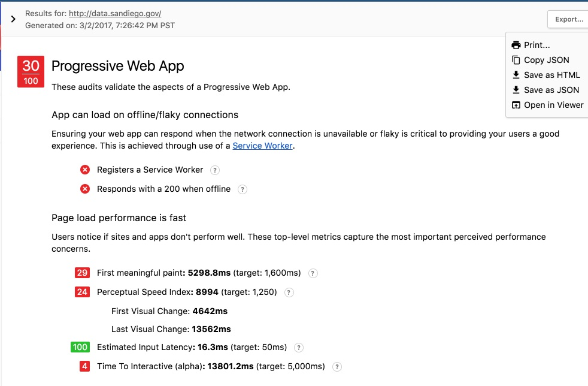
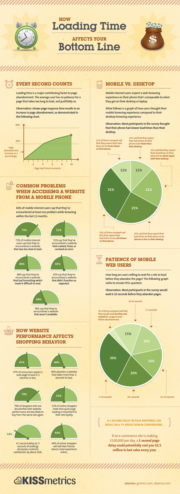
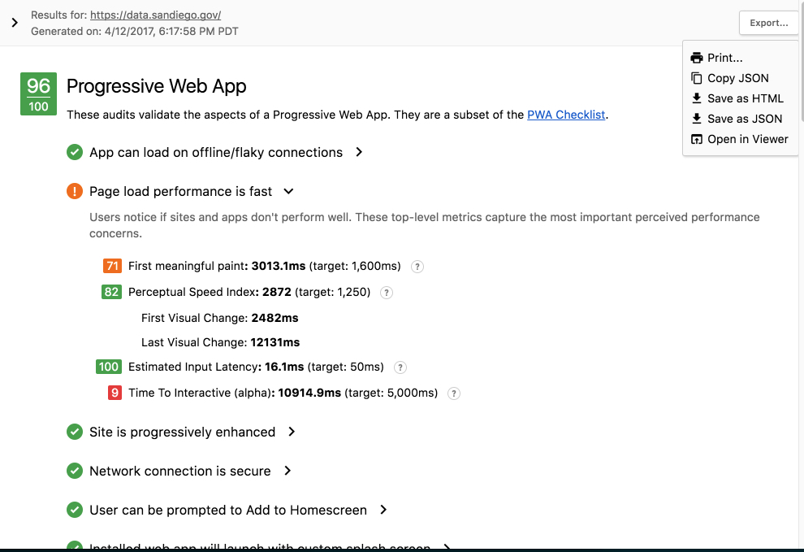

Hey San Diego! Your open data portal just got a LOT faster!
One of the reasons we wanted to run our own data portal is the flexibility we have to change it and add functionality.
Today, we’re putting the pedal to the metal on those desires. We initially launched the portal based on JKAN, but with modified schemas, layouts, and branding. Because of how fast we moved, we put off thinking about speed and performance.
Since the dust settled a bit, we had a chance to do that.
Lighthouse is a tool developed by Google to test web pages for performance, accessibility, and more. The first time we ran it against our portal, here’s what we got: 
30 out of 100, with a lot of marks against the portal due to loading speed. Time to first paint is a metric that measures when the primary content of a page is visible. That number means it took 5.3 seconds after you navigated to the portal for anything to show up.
We did badly on plenty of other metrics, including SSL encryption (HTTPS) and offline browsing.
So why does this matter (besides our obsessive perfectionism)? KissMetrics has a great infographic about this:

In short, we were losing an estimated 25 percent of portal users because of the page loading speed. Not good.
My friend and former Code for America co-fellow David Leonard (who also got me into Polymer components that the portal heavily uses ) helped me analyze where the bottlenecks were in our page loading time and gave me some tips about how to speed up the portal.
We implemented https and service workers (for security and offline browsing and caching) and optimized how components load. The portal is now encrypted, and you can browse it offline.
I’m not going to go into too much detail, but you can see the pull request here. We tested again and got a score of 96:

Let me use a few buzzwords to describe what happened here, for those fond of them:
We used an agile process to iterate on the technology underlying the performance, availability, and scalability of our portal architecture to decrease page loading speed, increase cybersecurity, and improve an already great product with enhanced user experience.
Or in English:
We did a thing that most organizations do: we improved something we launched, because no one ever gets everything right the first time. We’ll do it again, and again, and again. This is just the first of many changes and enhancements we will be making.
Enjoy your [faster] portal, San Diego!